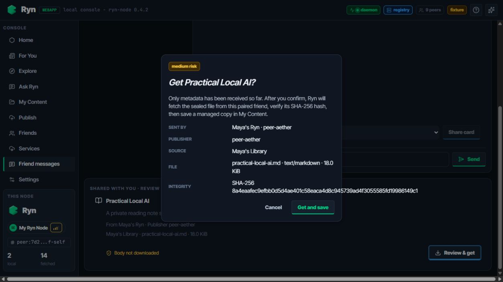
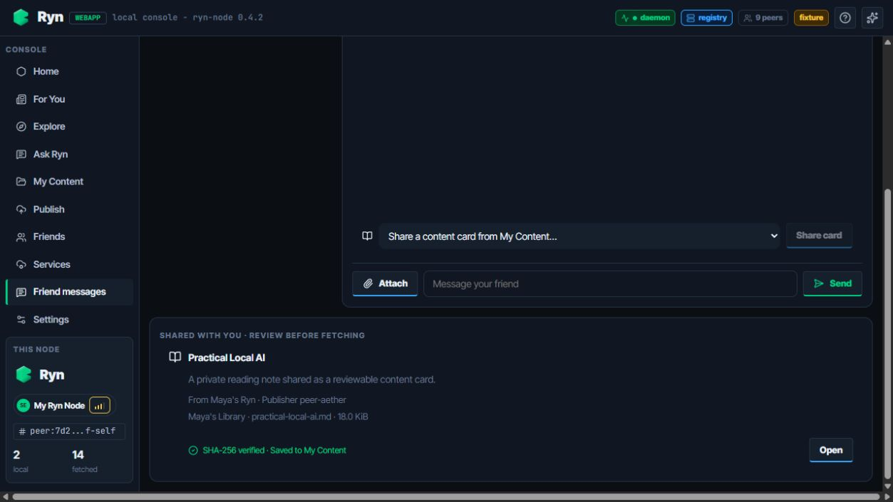

DEV05 · 内容卡片主动获取闭环
UI acceptance · Windows browser · fixture data

123
4用户确认后才传输正文收到卡片时只落元数据。确认后才向已配对设备请求密封内容；接收端以卡片承诺的大小和 SHA-256 校验正文，成功后写入 My Content。
1身份与来源可审阅明确区分“发送设备”和“发布者”，同时展示来源，避免把好友转发误当成原创发布。
2完整文件边界确认框展示文件名、MIME、大小及完整 SHA-256；用户能在联网拉取前判断对象与成本。
3正文尚未下载卡片正文默认不进入本机。只有显式点击“Get and save”才触发经过好友鉴权的主动请求。
4校验后进入内容库成功态同时表达“SHA-256 verified”和“Saved to My Content”；重复获取返回已有副本，不重复导入。